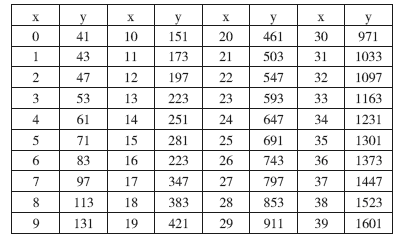

演绎推理是从具有一般性知识的前提中，推导出关于个别性事物性质结论的推理。但是，人们不禁要问：一般性知识是从哪里来的呢？
辩证唯物主义认为，物质是第一性的，意识是第二性的，人的一切知识，包括各种自然科学和社会科学原理、原则在内，归根结底都来源于直接经验，来源于实践。
自然界和人类社会的一般，都存在于个别特殊之中，并通过个别而存在。也就是说，一般性原则、规律都存在于具体的对象和现象中。因此，只有通过认识个别才能认识一般。人们在认识各个个别的、特殊的事物基础上，总结、概括出各种各样的带有一般性的原理、原则，然后才有可能从这些原理、原则出发，或以它为根据，再得出个别事物的结论。这是一个逐步深入、不断丰富的过程。人类对于自然和社会的认识，就是这样一步一步地积累、丰富、修正、发展起来的。
人类从个别到一般的认识过程，同样是一个内容极其复杂的过程，其中要运用各种各样的思维、认识方法，归纳推理就起着重要作用。
例如，我们根据金导电、铜导电、银导电、铁导电、锡导电等，得出所有金属都导电。类似这样，就是从对于个别事物的研究，得出一般性的原理、原则的推理方法。
那么，归纳推理和演绎推理有什么区别呢？
第一，演绎推理是从具有一般性原理、原则推出关于个别事物的结论，其思维过程是从一般到个别；而归纳推理则是从个别的、特殊的事例中推出一般性结论的过程，其思维过程是从个别到一般。
第二，演绎推理的前提是确定的，即使是复合演绎推理形式，也是几个三段论的结合，前提数量也是一定的。而归纳推理的前提的数量是不确定的，有的多有的少，根据需要和情况而定。
第三，演绎推理的大前提通常都是一般性的原理、原则，因此同经验没有直接联系；而归纳推理的前提，都直接与经验、实验有关，因其前提所涉及的是一些直接与经验、实验有关的个别的、单一的事物。
第四，演绎推理的结论，在原则上不超出前提的范围（不等于说不提供新知识）；归纳推理的结论，一般都超出前提的范围。
第五，演绎推理的结论与前提的联系是必然的，只要前提真实、形式正确，则结论一定是可靠的。而归纳推理的结论和前提联系，在很多情况下不是必然的，其结论性质有的是确实可靠的，有的只具有不同程度的可靠性，需要进一步加以检验和验证。因为归纳推理的前提是以直接经验为依据，而人们的经验总是不完全的，经验总是在路上、未完成的。
归纳推理可分为两类，即完全归纳推理和不完全归纳推理。不完全归纳推理又分为简单枚举归纳推理和科学归纳推理。
完全归纳推理是根据对一类事物中的每一对象进行研究，从而对整个这类对象作出一般性结论的推理形式。
例如：
水星围绕太阳运行；
金星围绕太阳运行；
地球围绕太阳运行；
火星围绕太阳运行；
木星围绕太阳运行；
土星围绕太阳运行；
天王星围绕太阳运行；
海王星围绕太阳运行；
这八个行星是太阳系行星的全部，
所以，太阳系的行星都围绕太阳运行。
再如：
锐角三角形的面积等于底乘高的一半；
直角三角形的面积等于底乘高的一半；
钝角三角形的面积等于底乘高的一半；
锐角三角形、直角三角形、钝角三角形是三角形的全部，
所以，所有三角形的面积都等于底乘高的一半。
人们从这些真实的前提中得出的结论是确实可靠的，同时也是必然的。这种推理的结论绝不是各个事实的简单相加的总和，而是得出一般的、概括性的知识。在严格的科学推理论证中常常被运用。
完全归纳推理所得结论是必然的、可靠的，有一定的认识作用，但有很大的局限性。当我们所研究的对象范围极其广大、数量无限时，就无法运用它。
简单枚举归纳推理是一种不完全的归纳推理。在生活实践中，它是人类最早也是最常用的推理方法。很早以前，人们就会根据已获得的关于个别事物的经验，推而广之，得出一般性的结论。例如，水能解渴、火能取暖、昼夜更替、冬去春来等，开始都是用简单枚举归纳推理得到的。即使在今天，我们根据所看到的天鹅都是白色的，乌鸦都是黑色的，没有发现其他颜色的天鹅或乌鸦，就得出结论：凡天鹅皆白，天下乌鸦一般黑。
简单枚举归纳推理，就是同一属性在同一类对象中不断重复，而没有遇到矛盾的情况。这对于获得一般性结论，对于逐步认识世界是必不可少的。如果有矛盾的情况，就不能得出一般性的结论。但是，必须明确，这种推论的根据是不充分的。当我们观察同一类对象都具有某种属性，而暂时没有遇到矛盾时，还不能确定矛盾不存在。
当人们在大洋洲发现了黑天鹅、灰天鹅，在南美洲发现了肺鱼，“凡天鹅皆白”“鱼都是用鳃呼吸的”结论就被推翻或修改了。
比如说，一个口袋里装的是什么我们不知道，只能用手一个一个地摸，如果摸出来一个是红色玻璃球，连续摸了十个都是红色玻璃球，人们就会猜测：大概全都是红色玻璃球吧。当摸了一万个后摸出一个绿色玻璃球，人们不是完全推翻刚才的结论，而是修改——大概都是玻璃球吧。当人们发现大洋洲有黑天鹅时，并不是完全推翻“凡天鹅皆白”的论断，而是经过研究和进一步观察，北半球的天鹅是白色的，黑天鹅、灰天鹅只生活在南半球。直到现在，人们还没有发现其他颜色的乌鸦，但也不能说“天下乌鸦一般黑”是绝对可靠的，乌鸦为什么是黑色？黑色是不是乌鸦所必须？有没有不是黑色的乌鸦？尚需进一步观察、研究和验证。
尽管简单枚举归纳推理不能提供完全可靠的结论，但在日常生活和工作中，在科学研究和实验中，都是离不开的。
例如，每年在评估粮食产量时，我们选择有代表性的地段，根据以往的经验，便可以得出一个对平均产量的大概估计。
再如，我们想确定进入食品仓库的一大批罐头的质量，总不能把所有的罐头都拿出来检验吧？我们可以从中取出一些罐头做检验、并验定这些商品是否达到了可接受的质量标准，然后在这个基础上得出一般性的结论：进入仓库的这批罐头的质量是合格的或不合格的。
在科学研究中，特别是在某些现象进行初步研究阶段，并不能一下子就找到充分的根据和准确的概括，往往先根据简单枚举归纳推理，提出一个初步的假定，然后再进一步观察、实验和研究，逐步寻找根据，发现规律性，证实或修改或推翻这个最初的假定。例如：
氦的化合价为零；
氖的化合价为零；
氩的化合价为零；
氦、氖、氩都是惰性气体；
所以，一切惰性气体的化合价为零。
这个推理是在发现了三种惰性气体的化合价为零的基础上得出的结论。但是，还有没有别的惰性气体？别的惰性气体的化合价是否也是零？必须进一步观察、实验和研究。
简单枚举归纳推理也有要求或规则。
第一，研究的那个类的对象要尽可能多。
只考察一个省两三个乡镇，便做出发展全省乡镇地方文化的一般性结论，容易陷入轻率。很显然，这个一般性结论是考察了五十个或一百个乡镇文化水平基础上做出的，可靠性会大些。
第二，要尽量研究一个类对象的不同品种，特别是有代表性的品种。
例如，在考察乡镇基层文化水平时，尽量选择有代表性的乡镇，如贫穷一点的或富裕一些的，沿海的或内地的，偏远的或靠近城市的，汉族的或少数民族的，等等。代表性强，结论的可靠性就大。
第三，尽力发掘某属性与某类对象之间的必然联系。
如果能够确定某属性是该类对象必然具有的，那么结论的可靠性就大大提高了，或最终成立了。
科学归纳推理，是根据对某类中部分对象及其属性之间的必须联系的认识，推出该类对象的一般性的结论。例如，“凡金属加热，体积就膨胀”这一结论，如果只是根据加热某些金属，这些金属就膨胀，而且没有遇到矛盾的情况，那么这个结论就是简单枚举归纳推理的结论。但是，当我们的研究深入继续，发现物体体积的大小取决于该物体分子之间距离的大小，而给金属加热时，就会引起金属分子之间的凝聚力减弱，相应的分子之间的距离就会加大，于是金属的体积便会发生膨胀现象。一旦我们认识了加热与金属体积膨胀之间的这种必然联系，我们就会得出一个确实可靠的结论：“加热于金属物体，其体积都必然发生膨胀。”这时，我们就是运用科学归纳推理。
在科学实验当中，人们多次发现，如果一个容器的气体被抽空时，那么与之相联的周围的空气，就会来充实这一被抽空的空间。当人们经过实验和推理研究，判明产生这种现象的原因是由于有大气压力时，就可以做出一个一般性的结论：每当容器被抽空并与周围空气连通时，则有空气来补充，而且这一过程必将继续下去，一直到大气压力与空气的压力均等为止。
科学归纳推理是以认识对象的必然属性为基础。现象间的因果联系是必然联系的形式。因此，当我们认识了产生现象的原因时，那就可以做出有关这一类对象的一般性的结论。通过科学归纳推理所得出的结论，通常都反映事物的必然性和规律性，其结论是全称判断。
科学归纳推理与演绎推理是紧密联系的。在进行科学归纳推理时，同时也在运用演绎推理。例如金属加热发生分子凝聚力减弱，而分子凝聚力减弱就引起金属体积膨胀，实际上这里包含着这样一个三段论：
分子凝聚力减弱即引起金属体积的膨胀；
加热于金属即引起分子凝聚力的减弱；
所以，加热于金属即引起它的体积膨胀。
科学归纳推理和简单枚举归纳推理有什么区别呢？
第一，科学归纳推理和简单枚举归纳推理的根据不同。
科学归纳推理是以认识事物之间的必然联系为根据的；而简单枚举归纳推理，则是根据某属性对于某类中一些对象的不断重复而未遇到矛盾的情况。
第二， 二者的结论性质不同。
简单枚举归纳推理的结论是或然的；而科学归纳推理的结论则是必然的。
第三，对于简单枚举归纳推理来说，被概括的事实的数量越多就越能提高结论的或然性。
但对于科学归纳推理而言，事实的数量不起重要作用，因为它是以认识因果关系为根据，为数不多的典型事例，有时甚至是一个。例如解剖一只麻雀，只要找到了事物的因果关系，认识了事物的必然性，就可以概括得出可靠的结论。
（1）先让我们看一个数学方程式：
y=x2+x+41
在这个方程式中，当：
x=0，y=41；
x=1，y=43；
x=2，y=47。
于是，得出结论：
x为整数时，
y的值都是素数（只能被1和自身整除）。
这是根据简单枚举归纳推理得出的结论，问题是这个结论可靠吗？
如果继续检验，你会发现在这个方程式中，当x的值在0～39时，y的值的确都是素数（见下表）。

到目前为止，如果我们的演算就终止了，并且对上述的结论信以为真，那就可能出问题；如果进一步运算就会发现：
当 x＝40，x＝41，x＝44，x＝49等时，y的值都是复数，而不是素数。
当 x＝40时，y的值是1681，就可以被41整除，即：
402+40+41＝1681＝41×41。
由此看来，在运用简单枚举归纳推理所得出的结论，要特别谨慎，要给予一定的怀疑，因为它有或然性的特点。
（2）容易让人们上当受骗的常常是数字，因为数字似乎是精确的、清楚的，往往又是统计出来的，所以很少有人怀疑，因此诡辩者对此很感兴趣，据说国外还有这方面的专著——《统计诡辩术》。如果对于数字的意义、统计的方法、统计的单位等，没有一定的认知，那就很容易上当。
例如有个日本人，对一些国家的年降雨量做了统计：
美国：约800毫米；
英国：约800毫米；
法国：约750毫米；
巴西：约700毫米；
日本：约1780毫米。
根据这个统计，这位日本“学者”得出结论：“日本的水资源是丰富的。”所谓“水资源丰富”，就是说淡水资源充足，大家可以尽情使用吧。果真是这样吗？以毫米为单位也许不好理解，让我们以亿吨为单位，按国土面积计算一下，一年内降雨总量就会出现如下情况：
美国：约75200亿吨；
英国：约2000亿吨；
法国：约4100亿吨；
巴西：约145000亿吨；
日本：约6600亿吨。
若按人口计算，得出每人每年平均水量：
美国：约35500吨；
英国：约3500吨；
法国：约7900吨；
巴西：约14000吨；
日本：约6000吨。
这样看来，日本的水资源不是比法国还少吗？现在让我们回过头来看一看统计与从中得出的结论之间存在的问题吧。那位日本“学者”的统计是在一些观测地点所获取的年降雨平均值，因而只能说日本年降雨量比较大，并不能得出“日本水资源充足”的结论。水资源是否充足同降雨量大小固然有关系，但不是唯一关系，因为还与地域大小、人口多少以及蓄水能力等有关。由此看来，用似是而非的统计数字得出企望的结论，是一种“巧妙”的诡辩术。